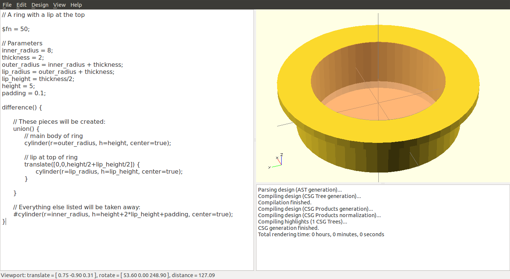

OpenSCAD User Manual
Table of Contents
- Introduction
- First Steps
- The OpenSCAD User Interface
- The OpenSCAD Language
- Using the 2D Subsystem
- STL Import and Export
- STL Import
- STL Export
- Commented Example Projects
- Using OpenSCAD in a command line environment
- Building OpenSCAD from Sources
- Building on Linux/UNIX
- Cross-compiling for Windows on Linux or Mac OS X
- Building on Windows
- Building on Mac OS X
- Libraries
- Glossary
- Index
Code Cheat Sheet

Tutorials - Articles / Blogs

An Introduction to 3d Modeling with openSCAD – openSCAD Basics
by Eric Matthes
January 8, 2013

AnOpenSCAD Tutorial Series on the Makerbot blog
by MakerBlock
2011-2013

OpenSCAD Tutorial Roundup on the Thingiverse blog
by Allan Ecker
Jan 28, 2011

OpenScad beginners tutorial at EduTechWiki
by Daniel K. Schneider
Mar 17, 2010 - May 2012

Make: Projects - Simple 3D models with OpenSCAD
by Sean Michael Ragan
Dec 2009

I Heart Robotics: OpenSCAD